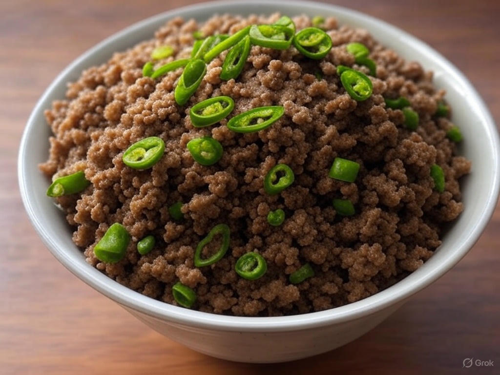

Sizou Changal Mepoh

Description
Sizou Changal Mapo, a quintessential Kuki dish from Northeast India, is a soul-warming blend of finely chopped meat—often chicken, pork, or beef—simmered with coarsely ground local rice into a thick, porridge-like consistency. Infused with the subtle heat of green chilies and the earthy aroma of crushed dry yam leaves, this hearty dish is elevated by a pinch of baking soda, which melds the flavors into a cohesive, comforting meal. Cooked slowly to let the rice break down and absorb the meat’s savory juices, it embodies the Kuki culinary ethos of simplicity and bold, natural tastes, perfect for a nourishing family meal served alongside fresh vegetables or a fiery chutney.
Ingredients
- Meat: 500g (chicken, pork, or beef), finely chopped
- Local rice: 1 cup (preferably short-grain or sticky rice), ground into a coarse powder
- Green chilies: 2–3, chopped (adjust to taste)
- Dry yam leaf (or Eurya acuminata): 1 tablespoon, crushed (substitute with dried spinach or mustard leaves if unavailable)
- Baking soda: 1/4 teaspoon
- Salt: 1–2 teaspoons, to taste
- Water: 2–3 cups (for cooking)
Cooking Steps
- Prepare Ingredients:
- Finely chop the meat into small pieces for even cooking.
- Grind the rice into a coarse powder using a mortar and pestle or blender. Set aside.
- Chop green chilies and crush the dry yam leaf.
- Cook the Meat:
- Place the chopped meat in a heavy-bottomed pot or wok over medium heat.
- Add a splash of water (about 1/2 cup) to prevent sticking and cook for 10 minutes, stirring occasionally, until the meat starts to release its juices and is partially cooked.
- Add Rice Powder:
- Sprinkle the ground rice powder over the meat. Stir well to combine.
- Add 2 cups of water, cover the pot, and let it cook for 10–15 minutes on low-medium heat. Stir occasionally to prevent the rice from sticking to the bottom.
Homepage